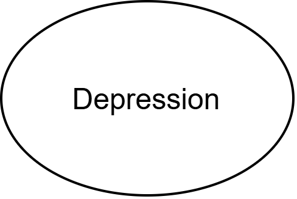
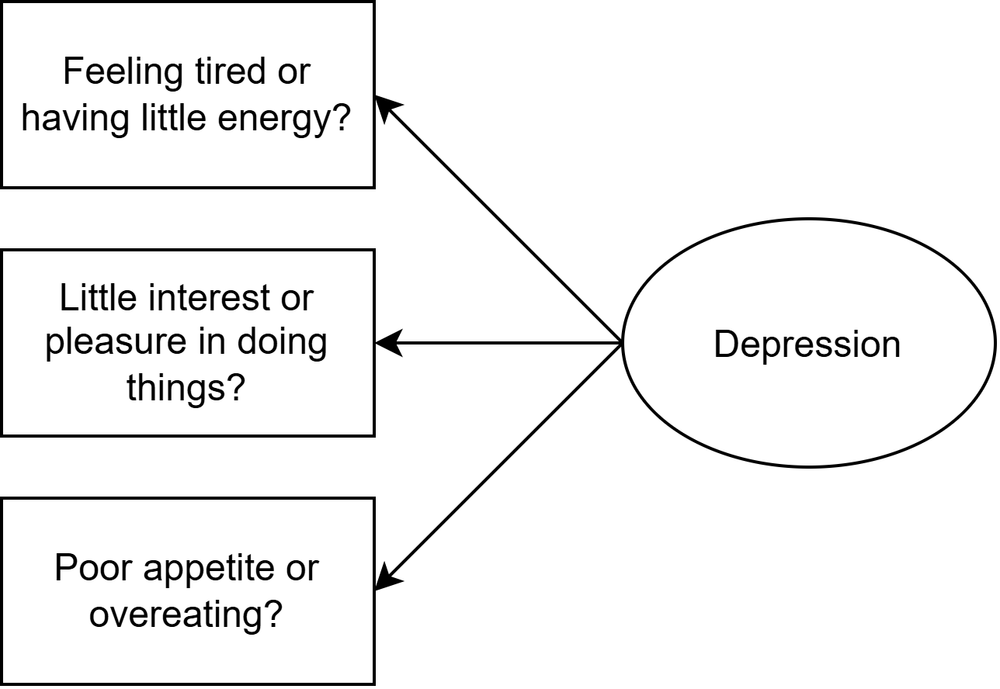
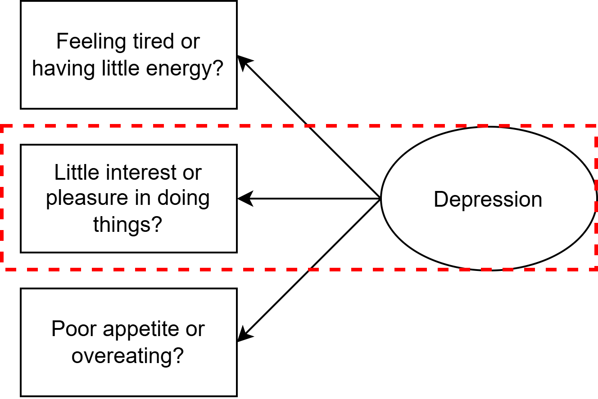
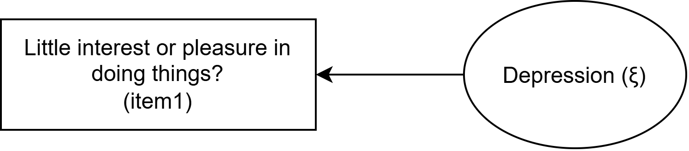
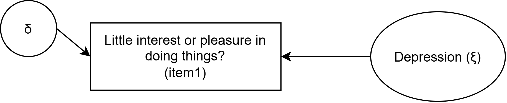
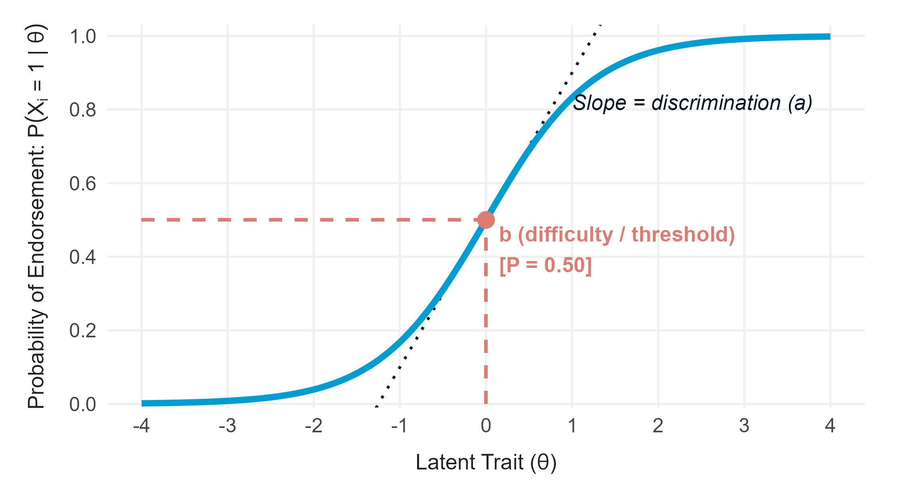
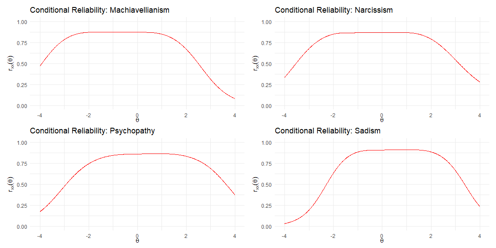
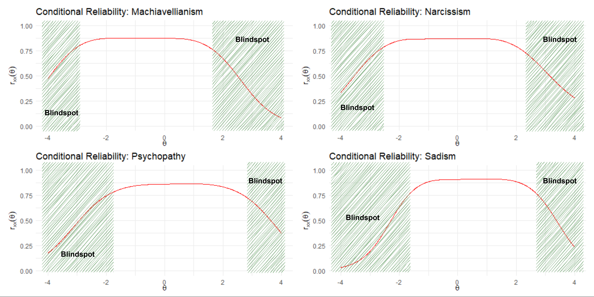
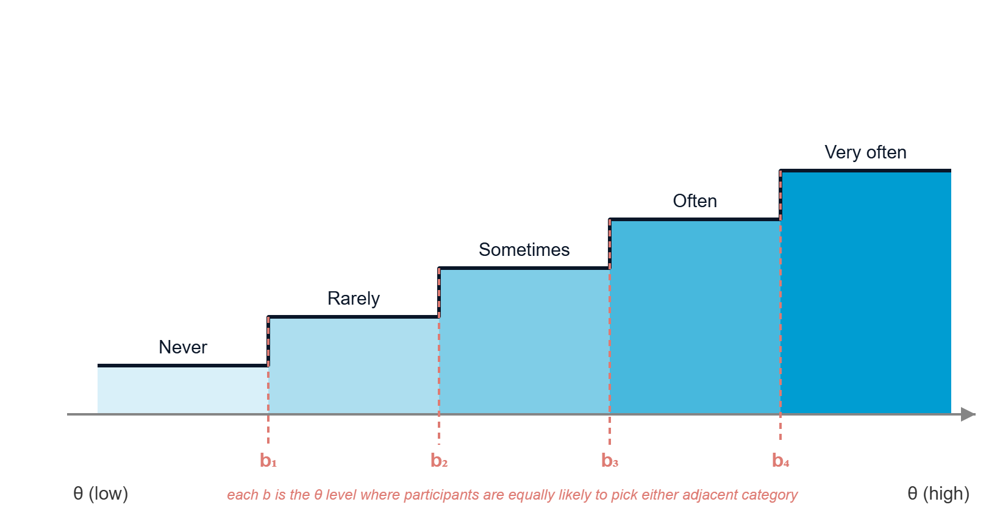
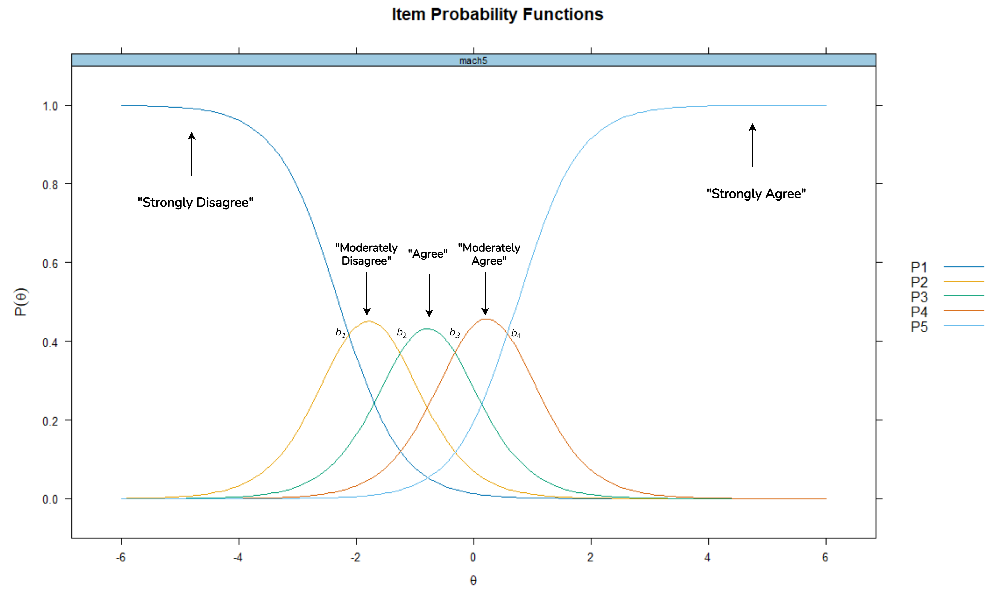

Research Data & Methods Team, Center for Advanced Internet Studies (CAIS)
Department of Psychology, Universitas Airlangga
Dr. Rizqy Amelia Zein
Introduction to IRT’s Graded Response Model
AGENDA
- What makes IRT different from “default” factor analysis (classical test theory - CTT)?
- Meet the IRT family
- Item and model parameters of the Graded Response Model (GRM)
- Hands-On: Fitting a GRM
- Interpreting model and item parameters
- Wrap-up, discussion, and Q&A
01
What makes IRT different from CTT?
Three points of divergence
Although CTT and IRT share similar fundamental assumptions, they differ in at least three aspects below.
Item-Latent Variable Relationship: Linear vs. Probabilistic
IRT models the relationship between items and the latent variable using probabilistic function.
CTT primarily expresses this relationship as a linear term.
Reliability: A “one-for-all” coefficient vs. A spectrum
IRT allows reliability to vary along with the latent trait spectrum.
CTT strongly assumes that reliability (thus measurement error) remains similar for the whole sample.
Invariance: Scale- vs. Item-level
IRT enables estimation of invariance at both item- (i.e., “differential item functioning” or DIF) and scale-level (i.e., “differential test functioning” or DTF).
CTT primarily focuses on estimating measurement invariance at the scale-level.
1️⃣ Linear vs. Probabilistic
Suppose that we want to measure how much a participant experiences symptoms of depression.

1️⃣ Linear vs. Probabilistic
Suppose that we want to measure how much a participant experiences symptoms of depression using a self-report scale.

1️⃣ Linear vs. Probabilistic
Let us zoom in here.

1️⃣ Linear vs. Probabilistic
In CTT terms, every increase in the latent trait (i.e., “Depression”) is associated with a constant increase in the expected score on the item. In other words, the latent trait causes the observed score (i.e., reflective model).

1️⃣ Linear vs. Probabilistic
… and because the relationship is linear, it can be expressed as a linear regression equation. This equation is what factor analysis looks like under the hood.

\[Item_i = \tau + \lambda \cdot \xi + \delta\]
1️⃣ Linear vs. Probabilistic
\[Item_i = \tau + \lambda \cdot \xi + \delta\]
- \(\tau\) (tau) — the item intercept: the expected item score when the latent trait is 0.
- \(\lambda\) (lambda) — the factor loading: how much the item is expected to change per one-unit change in the latent trait. This is our regression slope.
- \(\xi\) (xi) — the latent variable itself, here playing the role of the predictor.
- \(\delta\) (delta) — the residual/unique factor: the part of the item’s variance not explained by the latent trait (measurement error + item-specific variance).
BUT CFA can be nonlinear too
Standard CFA assumes continuous items and a strictly linear relationship. When items are ordinal or categorical, CFA can incorporate thresholds and non-linear link functions (e.g., categorical CFA via WLSMV, see details here) which is closely related to polytomous IRT.
1️⃣ Linear vs. Probabilistic
In contrast, IRT models this relationship as a probabilistic function, so the relationship between the latent trait and the observed score is non-linear.

\[P(X_i = 1 \mid \theta) = \frac{1}{1 + e^{-a_i(\theta - b_i)}}\]
- \(\theta\) (theta) — the latent trait of the participant (predictor, analogous to \(\xi\) in CFA).
- \(b_i\) — the item difficulty/threshold: the trait level where the probability of endorsement is 50% (\(P = 0.50\)).
- \(a_i\) — the item discrimination: the slope at the inflection point, showing how sharply the item differentiates (similar but not identical to loading \(\lambda\) in CFA).
2️⃣ Single Reliability Coefficient vs. A Spectrum
CTT gives one reliability coefficient for the whole sample.
- It assumes measurement error is the same for everyone, regardless of their trait level.
- A scale measuring people’s everyday discrimination experiences might sharply distinguish people with very high exposure of discrimination, but may be less optimal to capture people in the moderate range.
- In some contexts, this is exactly where policy-relevant nuance often lives.
- CTT can’t show where exactly on the latent trait spectrum our instrument is less or more optimal, but item response theory (IRT) can.
2️⃣ Single Reliability Coefficient vs. A Spectrum
These conditional reliability curves illustrate how measurement precision varies across different levels of the latent trait (\(\theta\)).

2️⃣ Single Reliability Coefficient vs. A Spectrum
Notice that along certain parts of the spectrum, very little information is available, leading to higher measurement error and lower reliability. These regions are exactly the blindspots that the scale cannot optimally capture.

3️⃣ Scale- vs. Item-level Invariance
As we saw earlier in multigroup CFA, measurement invariance tests whether an instrument behaves equivalently across groups.
- CFA/CTT: Primarily tests invariance step-by-step across the entire scale (configural → metric → scalar) by checking changes in global model fit.
- IRT (DIF & DTF): Directly pinpoints Differential Item Functioning (DIF) at the individual item level along the trait continuum \(\theta\):
- Uniform DIF: An item is systematically easier/harder to endorse for one group across all trait levels (difference in threshold \(b\)).
- Non-uniform DIF: An item discriminates differently across groups (difference in slope \(a\)).
- Differential Test Functioning (DTF): Aggregates item-level DIF to assess whether item biases cancel out or compound across the overall scale score.
02
Meet the IRT Family
The IRT Family
1PL, 2PL and 3PL models are built for binary data (correct/incorrect, yes/no). We are primarily interested in Likert-type (i.e., polytomous), and that’s what GRM is for.
| Model | Data type | What it estimates |
|---|---|---|
| 1PL / Rasch | Dichotomous | item difficulty only (equal discrimination assumed) |
| 2PL | Dichotomous | item difficulty and discrimination |
| 3PL | Dichotomous | item difficulty and discrimination + pseudo-guessing params |
| GRM | Polytomous (ordered categories) | discrimination a + multiple thresholds b per item |
…and many other variants that are specifically calibrated to estimate models with n of dimensions, n of response categories, response format, response styles, etc.
03
Item and Model Parameters of the Graded Response Model (GRM)
The Staircase Illustration

For an item with 5 response categories, GRM estimates 4 thresholds (\(b_1\)–\(b_4\)).
Each threshold marks the point on \(\theta\) where a participant becomes more likely to score at-or-above that category boundary than below it (formally, cumulative probability = 0.5), as in a staircase they “step up” as their trait level rises.
The mean of \(\theta\) is usually centered around 0, so a threshold like \(b_1 = -1.2\) means: people about 1.2 SD below the mean are the ones flipping between the two lowest categories.
Reading Item Probability Curves
Plot the probability of endorsing each category against \(\theta\): each threshold represents the transition boundary between two adjacent categories.

- The two extreme categories (“Never”/“Very often”) are bounded by only one threshold instead of two, so their curves rise or fall monotonically rather than peak as in the others.
- The middle categories peak in a bell shape between two thresholds.
- Steep, well-separated curves = an item that sharply distinguishes people near that threshold.
- Flat, overlapping curves = an item that isn’t telling us much at that part of the scale.
Two Item Parameters: a and b
Every item in a GRM gets one discrimination parameter (a) and several thresholds (b).
- \(b\) (threshold): where on \(\theta\) the item is doing its work. The number of b we get depends on how many response categories are there.
- \(a\) (discrimination): how strongly it distinguishes people around that point. Steeper curves reflect more informative item.
- Rule of thumb (Baker & Kim, 2017):
- \(a\) less than 0.35 = very low
- 0.35 – 0.65 = low
- 0.65 – 1.35 = moderate
- 1.35 – 1.70 = high
- more than 1.70 = very high
Three Assumptions
Before interpreting GRM model and item parameters, three core construct assumptions need to hold, which closely mirroring those in factor analysis:
Monotonicity
Higher \(\theta\) → higher probability of endorsing a stronger response category.
Unidimensionality
One \(\theta\) underlies the item pool, we already checked this in this morning’s factor analysis session.
Local Independence
Once \(\theta\) is accounted for, items shouldn’t still correlate with each other. In practice, expect some residual dependence, but the question is whether its severity is still within our tolerance.
These assumptions aren’t absolute. There are some advanced IRT models that don’t explicitly make one or more of the above assumptions.
04
Hands-On: Fitting a GRM
Today’s Exercise
We’ll fit a GRM together on a 7-item scale from the NaDiRA survey measuring discrimination experience.
- Items: 7 Everyday Discrimination scale items (
ker_diskerf_*, adapted from Williams, et al., 1997), 6-point frequency scale (Täglich/Daily → Nie/Never). - Data: Teaching extract of the NaDiRA dataset (N = 1,000; 972 complete cases), with a calibrated simulated option as fallback.
- Document (two options):
exercise.qmdorexercise.Rmd— open it now in RStudio and follow along. - You can compare the results with a published paper investigating the psychometric properties of the same (but longer) scale in Austrian sample: Amini-Nejad, R., Hirsch, S., Goreis, A., Nater, U. M., & Mewes, R. (2025). Factor Structure and Validity of a German Version of the Everyday Discrimination Scale Among Immigrants From Türkiye. Psychological Test Adaptation and Development, 6, 216–237. https://doi.org/10.1027/2698-1866/a000110
Open exercise.qmd
Let’s switch to RStudio.
We’ll walk through Steps 1–9 together: meet the data → dimensionality → fit GRM → item & test information → reliability → model fit → residual correlations (\(Q_3\)).
05
Reading & Using the Results
When (Not) to Use GRM
Sample size
Stable item parameters generally need a few hundred participants or more, so it is not a good option for a 30-person pilot.
Unidimensionality
If our EFA/CFA suggests multiple factors, a unidimensional GRM is the wrong choice. In this case, consider multidimensional GRM instead.
Not a replacement
GRM tells us about statistical precision. It doesn’t and cannot replace the focus groups, coding, and content validity work that we already learned on Day 1.
06
Wrap-Up & Discussion
Resources & Contact
- Textbooks (beginner → advanced):
- Beginner: Embretson, S. E., & Reise, S. P. (2000). Item Response Theory for Psychologists. Lawrence Erlbaum Associates.
- Intermediate: de Ayala, R. J. (2009). The Theory and Practice of Item Response Theory. Guilford Press.
- Intermediate/Advanced: DeMars, C. (2010). Item Response Theory. Oxford University Press.
- Advanced: van der Linden, W. J. (Ed.). (2016). Handbook of Item Response Theory (Vols. 1–3). CRC Press.
- Tutorial paper: Zein, R. A., & Akhtar, H. (2025). Getting started with the graded response model: An introduction and tutorial in R. International Journal of Psychology, 60(1), e13265. https://doi.org/10.1002/ijop.13265
- Questions afterwards: amelia.zein@cais-research.de or amelia.zein@psikologi.unair.ac.id.
Dr. Rizqy Amelia Zein
Center for Advanced Internet Studies (CAIS) & Universitas Airlangga
E-mail: amelia.zein@cais-research.de · Homepage: rameliaz.github.io


Thank you!
Center for Advanced Internet Studies (CAIS) gGmbH
Konrad-Zuse-Str. 2a, 44801 Bochum
info@cais-research.de
+49 234 9531 5000
www.cais-research.de

GRM-IRT | Zein | Workshop Itemkonstruktion 2026